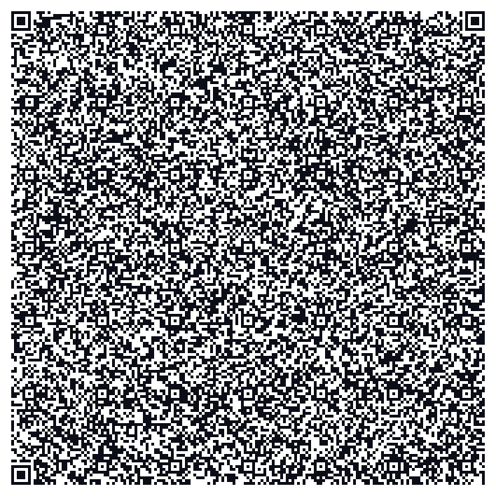

O maior desafio técnico desse projeto não foi programar a física das colisões, mas fazer tudo caber dentro do limite de 2.699 bytes da versão 38 de um QR Code, com correção de erro L. A versão 38 foi a menor capaz de comportar os 2.645 caracteres do link: a versão 37 para em 2.563 bytes. Primeiro, o código passa por uma minificação agressiva onde variáveis e funções perdem nomes legíveis e viram letras isoladas como Z(). Depois, o compressor DEFLATE reduz o arquivo original para 2.071 bytes. Na etapa final, evitamos o tradicional Base64 — que aumenta o tamanho do arquivo em cerca de 33% — e usamos Base85, que aproveita caracteres imprimíveis seguros para URL e entrega uma codificação muito mais densa. Quando você abre o link, o carregador lê esse texto direto da barra de endereço na memória do seu celular, descomprime em milissegundos e dá vida ao jogo.
SETOR 01 // CONSTELAÇÃO
Os 7 Mundos
Cada planeta guarda um jogo completo comprimido em um único link e um habitante que nasceu desse ambiente. Toque nos planetas para vê-los reagir ou abra a ficha de cada mundo para explorar a engenharia por trás do código.
Arraste para mirar e solte para derrubar. Junte esferas iguais até formar a 2048.
- Arraste
- Mire
- Solte
- Funda iguais
1 · Como jogar
Arraste para mirar onde a esfera vai cair e solte para derrubá-la. Esferas iguais que se tocam se fundem na seguinte (2 + 2 = 4, 4 + 4 = 8…), e uma fusão pode puxar a próxima, em cadeia, até formar a 2048.
2 · A matemática da função Z()
A cada disparo, a função Z() sorteia qual esfera vem a seguir. Ela olha quantos disparos já foram feitos (m), define a fase q = min(2, m ÷ 35) e, com 30% de chance, ignora a fase e usa o nível 0. Depois soma 0 ou 1 na moeda.
function Z(){let q=M.min(2,m/35|0);k=(M.random()<.3?0:q)+(M.random()*2|0)}
Resultado: nas fases 1 e 2 só nascem esferas pequenas, e na fase 3 as maiores chegam ao 16. O 32 nunca é sorteado, ele só aparece quando duas esferas de 16 se fundem.
3 · Paleta hexadecimal das esferas
- 2 #f67
- 4 #fd6
- 8 #5de
- 16 #6d9
- 32 #b8f
- 64 #f95
- fundo #0b0d17
- parede #4b657b
4 · Diário de erros reais
O visual feio e a cara de template. As primeiras versões funcionavam na lógica, mas a interface estava genérica, cheia de caixas soltas e tons roxos. Nada agradava o Eduardo — jogamos o layout fora e refizemos toda a identidade visual do zero.
O 32 que nascia cedo demais. Nos primeiros testes, o sorteio podia gerar uma esfera 32 logo no início e entupir a arena. Reescrevemos a função Z() em três degraus de dificuldade bloqueando o 32 do sorteio.
Colisões tremendo no fundo da arena. Com muitas esferas acumuladas na base, a gravidade fazia as peças vibrarem sem parar. Ajustamos o amortecimento e as sub-etapas de física para a pilha assentar firme.
Explosão de tamanho na URL. Cada melhoria visual estourava o limite da câmera do celular. Foram dezenas de rodadas cortando variáveis para uma única letra e trocando Base64 por Base85 até fechar em exatos 2.645 caracteres.
QR Code invertido ilegível. Na primeira tentativa, os módulos saíram claros sobre fundo escuro e câmera nenhuma lia. Invertemos a polaridade para preto sobre branco puro.
Mascotes cortados na órbita. Na v0.2.0, o canvas orbital apertado cortava o Redox pela metade nas bordas laterais — corrigido ampliando a área da órbita.
Lance rajadas de bolinhas, rebata com a barra e abra túneis numa parede de microblocos.
- Dispare
- Rebate
- Abra túneis
1 · Como jogar
Arraste para mirar e solte para lançar uma rajada de bolinhas. Mova a barra para rebater cada uma de volta e abra túneis na parede de microblocos, antes que ela desça até a sua barra a cada rodada.
2 · A matemática do rebote e das colisões
Quando a bolinha toca a barra, a distância entre o ponto de impacto e o centro vira um número a entre −0,9 e +0,9. A nova velocidade mantém o módulo V = 240 e só muda a direção: no centro a bolinha sobe reta, e na ponta da barra ela sai a cerca de 54° da vertical (arcsen 0,81).
a = clamp((b.x - x) / (w * .625), -.9, .9) vx = a * V * .9 vy = -sqrt(V*V - vx*vx)
Nas colisões com os microblocos, cada bolinha só confere uma janela de 3×3 células ao redor e para no primeiro bloco que tocar, então um bloco por passo. O lado do impacto vem da posição anterior da bolinha: se ela já estava ao lado do bloco, inverte vx, senão inverte vy. A física roda em passos fixos de 1/120 s, para nenhuma bolinha atravessar um bloco mesmo com até 50 na tela (80 com bônus), e uma velocidade vertical mínima de 30% de V impede que ela fique presa rolando na horizontal.
3 · Paleta hexadecimal
- bloco 1 #1ac
- bloco 2 #cc4
- bloco 3 #f76
- bloco 4 #f59
- bloco 5 #c5f
- bloco 6 #a5f
- bolinha #def
- barra #6ef
- placar #fd7
- +3 / S #6f8
- +30 #f4f
- 2x #fd5
- P #fa6
- fundo #090a0f
4 · Diário de erros reais
Orçamento de bytes estourado. Unir grade de microblocos, power-ups (+3, +30, 2x, P), partículas e dezenas de bolinhas sem estourar o peso do código foi o maior desafio.
Bolinhas atravessando blocos em alta velocidade. Com rajadas de 50 a 80 bolinhas simultâneas, algumas varavam a parede. Travamos a física em sub-passos fixos de 1/120 s com janela 3×3 ao redor de cada esfera.
Bolinha presa na horizontal. Em ângulos rasos, a bolinha ficava quicando de lado sem descer. Criamos uma trava que mantém a velocidade vertical mínima em pelo menos 30% da velocidade total.
O paradoxo dos 4.347 caracteres. Comprimido em Base85, o código passou de 4.300 caracteres — denso demais para um QR Code legível no celular. Criamos uma página ponte curta só para a câmera ler, mantendo o botão Jogar Agora na URL gigantesca original.
Mascote errado e planeta apagado. Nos testes iniciais, um slime verde orbitava o planeta vermelho e as fissuras quase não apareciam. Trocamos pelo Krakel e acendemos o brilho de magma do Planeta Tecton-IV.
Sinais no radar
Cinco planetas ainda em construção. Os ETs caminham e dormem lá dentro, esperando o jogo deles ficar pronto.
SETOR 02 // ENGENHARIA REVERSA
Como umjogointeiro cabe num quadradinho de pixels?
Quando você aponta a câmera para um QR Code comum, ele apenas lê um endereço curto e manda seu celular baixar um site pesado da internet. Aqui fizemos o caminho oposto: eliminamos o servidor do jogo e transformamos o próprio texto do link na programação inteira.
A Cirurgia dos 2.645 Caracteres
Um link de navegador não foi feito para carregar um videogame. Para que a programação inteira viajasse dentro da própria URL sem depender de arquivos externos, cada linha de código passou por uma dieta extrema: reescrevemos funções inteiras em letras únicas, comprimimos os padrões repetidos com o algoritmo DEFLATE e convertemos o resultado binário em texto Base85. O resultado final cravou em 2.645 caracteres — dentro do limite do QR Code de versão 38, que uma câmera de celular consegue ler.
Zero Imagens. Zero Arquivos de Som. Matemática Pura
Se colocássemos uma única textura PNG ou um efeito sonoro em MP3 dentro do projeto, estouraríamos o limite de tamanho antes mesmo de desenhar a primeira tela. Por isso, não existe nenhum arquivo de mídia escondido aqui: cada esfera, trajetória, explosão de partículas e nota musical é calculada e gerada ao vivo pelo processador do seu navegador no exato segundo em que você toca na tela.
Nos jogos tradicionais, grande parte do peso vem de arquivos externos — folhas de sprites, fontes customizadas e trilhas de áudio pré-gravadas. Para zerar esse custo, construímos todo o motor visual diretamente sobre equações matemáticas no Canvas HTML5: círculos, brilhos, linhas de mira e fragmentos de impacto são desenhados coordenada por coordenada a 60 quadros por segundo. O som segue a mesma filosofia usando a Web Audio API nativa dos navegadores: em vez de tocar gravações, o código cria osciladores de onda, controla o ataque e o decaimento da frequência em tempo real e sintetiza cada impacto, fusão ou recorde batido na hora.
Os 7 Habitantes que Escaparam da Compressão
Nos primeiros rascunhos deste universo, sete criaturas espaciais deveriam habitar as arenas jogáveis. Mas, na batalha para cortar cada byte e fazer os códigos caberem dentro de um link, elas tiveram que sair de cena. Em vez de apagar esses personagens, demos um planeta, um nome e uma origem científica para cada um — transformando os rascunhos cortados nos guardiões desta constelação.
Cada um dos sete moradores — Redox, Krakel, Glúon, Sporak, Arest, Nulox e Vesper — nasceu desenhado em uma matriz espelhada de 8×8 pixels, um truque clássico dos fliperamas antigos onde você armazena a grade compacta de 8×8 blocos direto no código sem depender de arquivos de imagem. Mesmo fora dos links comprimidos, eles ganharam vida própria aqui na superfície: caminham pela curvatura dos seus planetas, reagem ao toque com física e som sintetizado, e guardam os cinco setores que ainda estão em construção no radar para os próximos lançamentos da coleção.
RAIO-X DA COMPRESSÃO
Arraste a lente sobre o QR Code para atravessar os quadradinhos e enxergar a programação real comprimida em Base85.
Carregando o código…

1 foto comum tirada no celular (~2 MB) = 772 jogos inteiros como este (2,6 KB · 772× MENOR)